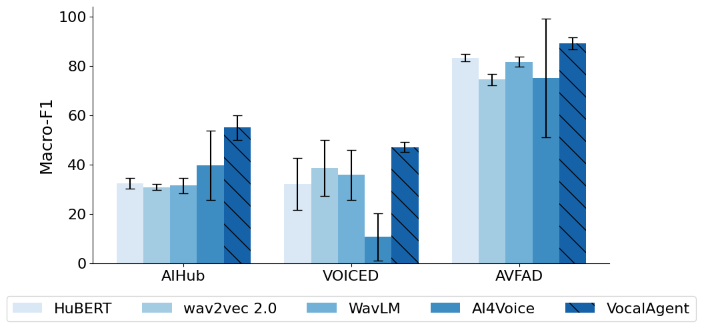

Main Result
Comparison of macro-F1 scores for VocalAgent and baseline models across the AIHub, VOICED, and AVFAD datasets. VocalAgent consistently outperformed baseline models across all datasets. On AIHub, it achieved 67.0 ± 1.0 accuracy and 55.0 ± 5.0 macro-F1, surpassing HuBERT (63.2 ± 4.3). On VOICED, it reached 72.0 ± 4.0 accuracy and 47.0 ± 2.0 macro-F1, outperforming other models. Most notably, VocalAgent excelled on AVFAD with 89.2% accuracy and 89.1 macro-F1, demonstrating balanced performance across disorder categories, which is critical for clinical use. Compared to other models, VocalAgent delivered more stable and consistent results, validated by lower standard deviations in both accuracy and macro-F1.
